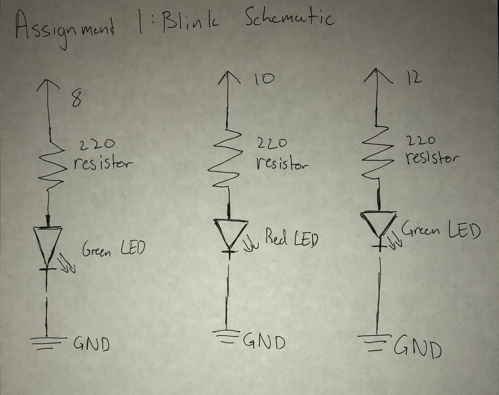

Seung Won's Assignment 1: Blink!

This gif shows the pattern that I created using arduino code. For this circuit I had the green LEDs blink in sync while the red one would blink on the opposite pattern. So, whenever the green LEDs turned on the red led would be off and when the red LED turned on the green LEDs would turn off.
In order to acheive this pattern the code that I used was based off of the template blink code provided in arduino with a few tweaks. Here is the code that I used below:
// the setup function runs once when you press reset or power the board
void setup() {
// initialize digital pin 8 as an output.
pinMode(8, OUTPUT);
// initialize digital pin 10 as an output.
pinMode(10, OUTPUT);
// initialize digital pin 12 as an output.
pinMode(12, OUTPUT);
}
// the loop function runs over and over again forever
// for my led display although each led is powered by a seperate digital pin I wanted them to blink
// in a pattern so I had two turn on and off in sync while the other led would turn on and off on the
// opposite pattern
void loop() {
// This has two of the leds turn on in sync
// turns one of the green LEDs on (HIGH is the voltage level)
digitalWrite(8, HIGH);
// turns the other green LED on (HIGH is the voltage level)
digitalWrite(12, HIGH);
// wait for 0.1 seconds
delay(100);
// turns one of the green LEDs off by making the voltage LOW
digitalWrite(12, LOW);
// turns the other green LED off by making the voltage LOW
digitalWrite(8, LOW);
// wait for 0.1 seconds
delay(100);
// turns the red LED on (HIGH is the voltage level)
digitalWrite(10, HIGH);
// wait for 0.2 seconds
delay(200);
// turn the red LED off by making the voltage LOW
digitalWrite(10, LOW);
// wait for 0.2 seconds
delay(200);
}
One change that I made was that instead of having just one digital pin there were three different digital pins in use, one for each of the LEDs. The second change is that rather than each of them being on seperate delays/patterns I grouped the code that turned on and off the green LEDs into one delay group and let the code that controlled the red LED in a seperate delay group. The final change that I made was that the delay for the green LEDs, rather than being 1 second was 0.1 seconds long and the delay for the red LED rather than being 1 second is 0.2 seconds long.

The image above shows the actual circuits in detail without the LEDs blinking so that the circuit can be seen in detail. In this case I color coded the breadboard jumper wires so that I wouldn't get confused about whether it was positive or negative and could be clearly understood by others as well. I have one blue wire connecting from the ground pin of the arduino to the negative power bus. Then I connected each of the pins that I chose to the prototyping area using red wires. Then, I connected one end of a 220 resistor on the same horizontal line as the red wires then connected it to a spot one row down for each one. After that I connected an LEDs positive wire to the same row as the end of the resistor for each one. Then a blue wire was connected from the row of the LEDs negative sides to the grounded negative power bus.
This is the schematic for the circuit shown previously. In this case we see the schematic showing the pin that each circuit goes from the value of the resistor that is goes through the kind of LED that it travels through and finally that to complete the circuit that it travels to ground. In this case I used the 220 resistors because I assumed that each ciruit would get 5V but since both the green and red LEDs have a voltage drop of 1.8V and the current would be around 0.02 Amperes I calculated that it would need a resistance of 160 which was rounded up to 220 since that was the resistor that was the closest to 220 without being too low.